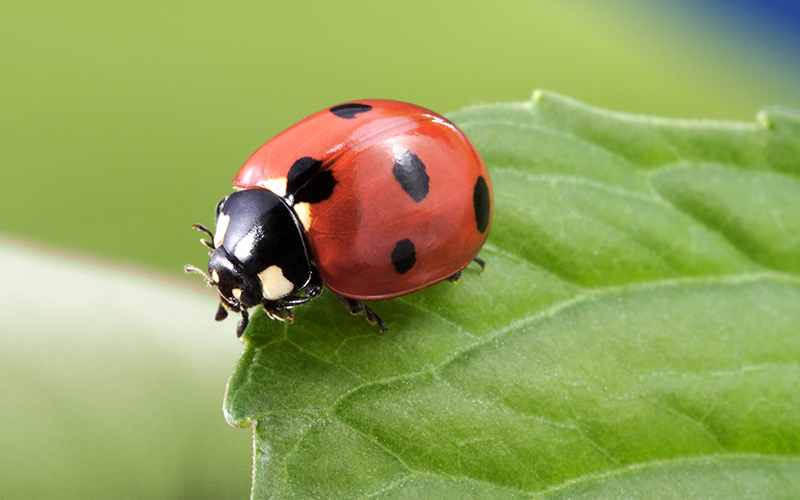

Animais terrestres
São aqueles insetos que vivem pelo menos um estágio do ciclo de vida em ambiente aquático.


Animais aquaticos
São aqueles insetos que vivem pelo menos um estágio do ciclo de vida em ambiente aquático.